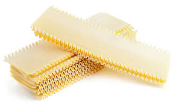
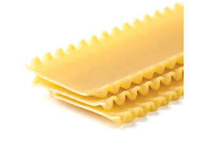
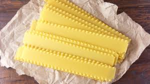

Noodle shape
The lasagna noodle is not a debateable shape, unlike most other pasta dishes. Lasagna noodles are wide, flat sheets of pasta, typically rectangular, that can have straight or wavy edges. Some lasagna noodles have ridges running all the way down the noodles, which are supposed to help catch sauces and other ingredients as it bakes.
.
.
.
Typically, lasagna noodles are pre-cooked in water and then baked in the layers.
See below some images of lasagna noodles:
  